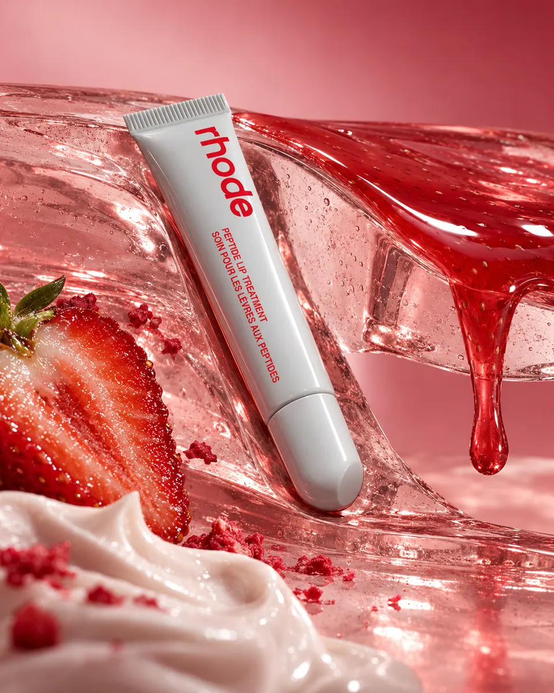

THE ART OF CRAVING
Beauty and patisserie in eight sharply different material worlds.
Beauty · Unofficial brand study
View the seriesCommercial art direction & campaign concepts.
Self-initiated visual studies for drinks, fragrance and beauty. Fictional and existing brands are identified clearly; no client commission is implied.
Explore the work DBA / DUAL FORCEExplore the campaign ↗
DBA / DUAL FORCEExplore the campaign ↗Each campaign starts with one visual proposition and follows it through a complete series.

Beauty and patisserie in eight sharply different material worlds.
Beauty · Unofficial brand study
View the series
Resonance made visible through water, glass and paper.
Drinks · Unofficial brand study
View the series
A cane spirit built around the decisive angle of a harvest cut.
Drinks · Fictional identity
View the seriesBrowse by category. Each project page holds the full image series and the thinking behind it.
FIELD / CUTA cane spirit built around the decisive angle of a harvest cut. COLD / CONTACTWhat if cold left a temporary print?
COLD / CONTACTWhat if cold left a temporary print? ONE FORM / THIRTEEN FREQUENCIESOne bottle shape, thirteen visual frequencies.
ONE FORM / THIRTEEN FREQUENCIESOne bottle shape, thirteen visual frequencies. THREE WOODS / ONE SPIRITThree cask histories converge into one whisky.FALL INTO THE ECHOResonance made visible through water, glass and paper.
THREE WOODS / ONE SPIRITThree cask histories converge into one whisky.FALL INTO THE ECHOResonance made visible through water, glass and paper. DBA / DUAL FORCEA matte-black performance drink shaped by opposing forces.
DBA / DUAL FORCEA matte-black performance drink shaped by opposing forces. THE WEIGHT WE SHAREStrength as a load carried together.
THE WEIGHT WE SHAREStrength as a load carried together. THE SOFT CENTREA hard-edged bottle inside an almost weightless floral world.
THE SOFT CENTREA hard-edged bottle inside an almost weightless floral world. THE PRESSURE CHAMBERSweetness held under pressure, then released.
THE PRESSURE CHAMBERSweetness held under pressure, then released. SLOW UNFURLINGWarm spice and woods translated into an unfolding space.
SLOW UNFURLINGWarm spice and woods translated into an unfolding space. SUGAR HAS A SHADOWPetal sweetness with a deeper afterimage.
SUGAR HAS A SHADOWPetal sweetness with a deeper afterimage.I build campaign worlds around a material, gesture or visual tension that belongs to the product. The work moves between packaging, still-life direction, typography and digital image-making.
These projects are self-initiated concepts, developed with AI-assisted image production and deliberate art direction. They are not photographs of commissioned shoots, endorsements or finished packaging masters.